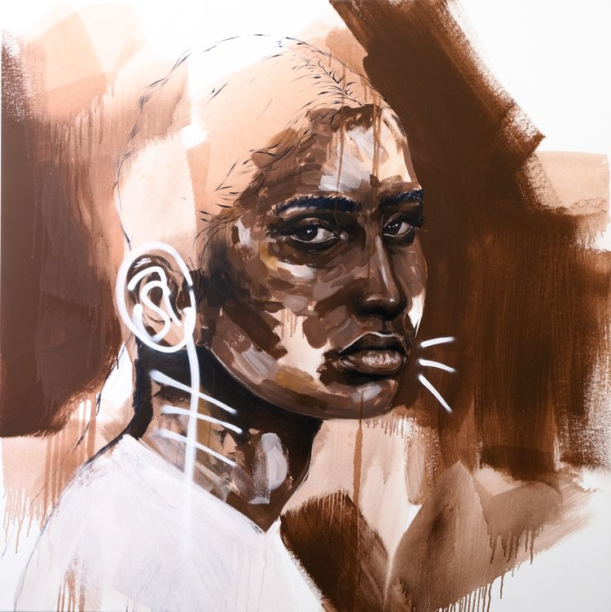

Greens by Boemo Diale

Expressions by Yolanda

Im here by Charity

Siblings by Seth Pimentel
Boemo Diale (b. 2000 - Johannesburg, RSA) is a multidisciplinary artist ( Currently studying for a Bachelors in Film and Television at The University of The Witwatersrand) who grew up navigating different racial structures in Rustenburg,
Mafikeng and the suburbs of Johannesburg.
Her works interrogate the inner workings of her child self that existed in liminal spaces between rural and urban.
Her works reflect nuances of gender, race, culture, identity, mental health and spirituality. The works are often playful,
a colourful exploration of race, gender, spirituality and identity as a racially ambiguous black woman.
Greens by Boemo Diale
Expressions by Yolanda
Im here by Charity
Siblings by Seth Pimentel